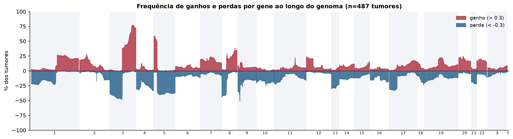
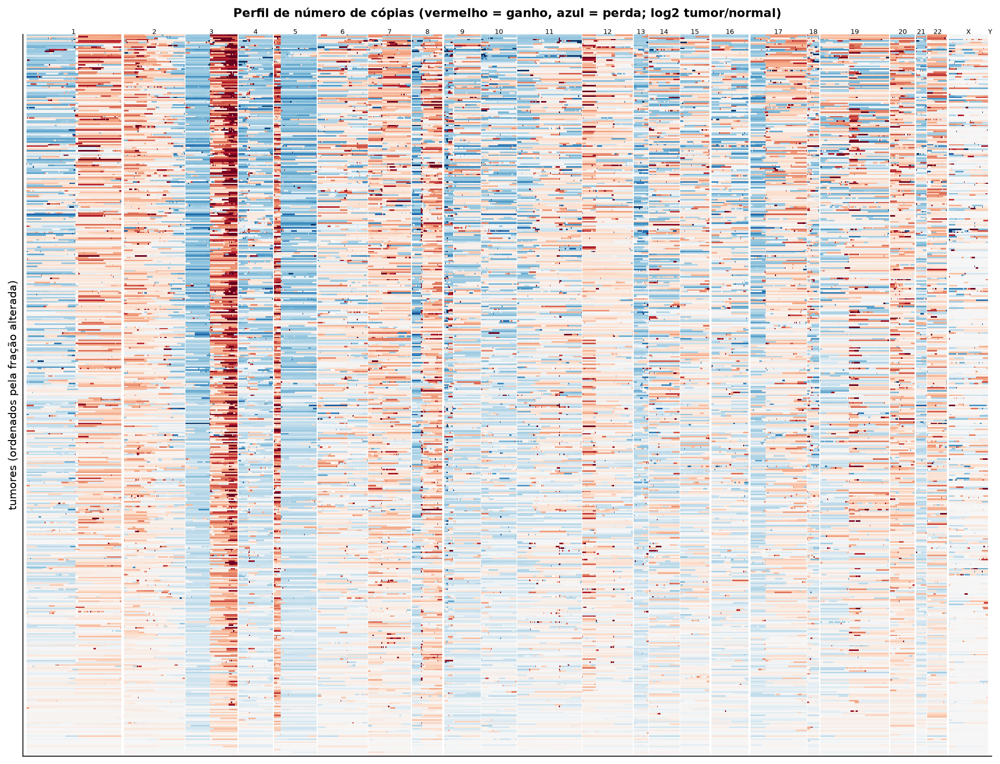
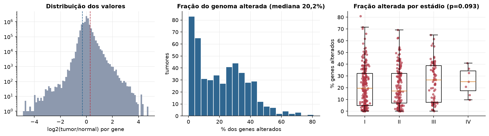
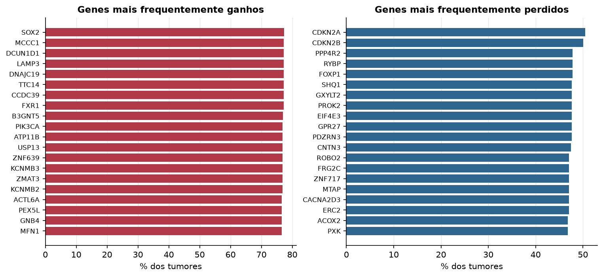

LUSC · Número de cópias (CNV)
Affymetrix SNP6, segmentos whitelisted do PanCanAtlas · gerado em 22/10/2026 01:43
487tumores
17.738genes
20,2%fração alterada mediana
172segmentos/tumor (mediana)
Fonte: SNP6 whitelisted (PanCanAtlas); nível de gene calculado dos segmentos (hg19)
O valor por gene é o do segmento que cobre o meio do gene (log2 tumor/normal, hg19). Sem correção de pureza e ploidia: tumores com pouca célula tumoral têm valores atenuados. Para chamadas discretas (−2 a 2), use o GISTIC2 do PanCanAtlas ou o ABSOLUTE.
Principais resultados
- Mediana de 20,2% dos genes com ganho ou perda por tumor (limiares log2 de 0.3 e -0.3).
- O cromossomo com mais ganhos em média é o 3 (29,7% dos tumores por gene) e o com mais perdas é o 5 (31,4%).
- Genes mais ganhos: SOX2 (77%), MCCC1 (77%), DCUN1D1 (77%), LAMP3 (77%), DNAJC19 (77%), TTC14 (77%). Genes mais perdidos: CDKN2A (51%), CDKN2B (50%), PPP4R2 (48%), RYBP (48%), FOXP1 (48%), SHQ1 (48%).
- Fração alterada por estádio: Kruskal-Wallis p=0.093.
Paisagem ao longo do genoma


Carga de alterações

Genes recorrentes

Top 25 genes por frequência de ganho
| gene | chrom | % ganho | % perda | média log2 |
|---|---|---|---|---|
| SOX2 | 3 | 77.4 | 0 | 0.732 |
| MCCC1 | 3 | 77.2 | 0 | 0.724 |
| DCUN1D1 | 3 | 77.2 | 0 | 0.728 |
| LAMP3 | 3 | 77.2 | 0 | 0.721 |
| DNAJC19 | 3 | 77.2 | 0 | 0.682 |
| TTC14 | 3 | 77.2 | 0 | 0.673 |
| CCDC39 | 3 | 77.2 | 0 | 0.673 |
| FXR1 | 3 | 77.2 | 0 | 0.68 |
| B3GNT5 | 3 | 77 | 0 | 0.715 |
| PIK3CA | 3 | 76.8 | 0 | 0.659 |
| ATP11B | 3 | 76.8 | 0 | 0.731 |
| USP13 | 3 | 76.8 | 0 | 0.654 |
| ZNF639 | 3 | 76.8 | 0 | 0.66 |
| KCNMB3 | 3 | 76.8 | 0 | 0.659 |
| ZMAT3 | 3 | 76.8 | 0 | 0.661 |
| KCNMB2 | 3 | 76.8 | 0 | 0.662 |
| ACTL6A | 3 | 76.6 | 0 | 0.653 |
| PEX5L | 3 | 76.6 | 0 | 0.655 |
| GNB4 | 3 | 76.6 | 0 | 0.657 |
| MFN1 | 3 | 76.6 | 0 | 0.656 |
| NDUFB5 | 3 | 76.6 | 0 | 0.653 |
| MCF2L2 | 3 | 76.6 | 0 | 0.707 |
| MRPL47 | 3 | 76.6 | 0 | 0.653 |
| GHSR | 3 | 76.4 | 0 | 0.645 |
| ALG3 | 3 | 76.4 | 0 | 0.659 |
Top 25 genes por frequência de perda
| gene | chrom | % ganho | % perda | média log2 |
|---|---|---|---|---|
| CDKN2A | 9 | 2.5 | 50.5 | -0.463 |
| CDKN2B | 9 | 2.9 | 50.1 | -0.463 |
| PPP4R2 | 3 | 0.4 | 47.8 | -0.303 |
| RYBP | 3 | 0.4 | 47.8 | -0.302 |
| FOXP1 | 3 | 0.4 | 47.8 | -0.316 |
| SHQ1 | 3 | 0.4 | 47.6 | -0.301 |
| GXYLT2 | 3 | 0.4 | 47.6 | -0.301 |
| PROK2 | 3 | 0.4 | 47.6 | -0.301 |
| EIF4E3 | 3 | 0.4 | 47.6 | -0.301 |
| GPR27 | 3 | 0.4 | 47.6 | -0.301 |
| PDZRN3 | 3 | 0.4 | 47.6 | -0.301 |
| CNTN3 | 3 | 0.4 | 47.4 | -0.299 |
| ROBO2 | 3 | 0.6 | 47 | -0.294 |
| FRG2C | 3 | 0.2 | 47 | -0.297 |
| ZNF717 | 3 | 0.2 | 47 | -0.297 |
| MTAP | 9 | 2.9 | 47 | -0.404 |
| CACNA2D3 | 3 | 0.2 | 47 | -0.29 |
| ERC2 | 3 | 0.4 | 47 | -0.289 |
| ACOX2 | 3 | 0.4 | 46.8 | -0.285 |
| PXK | 3 | 0.4 | 46.8 | -0.285 |
| FAM3D | 3 | 0.2 | 46.8 | -0.288 |
| FAM107A | 3 | 0.2 | 46.8 | -0.287 |
| KCTD6 | 3 | 0.4 | 46.8 | -0.285 |
| PDHB | 3 | 0.4 | 46.8 | -0.285 |
| ABHD6 | 3 | 0.4 | 46.8 | -0.285 |